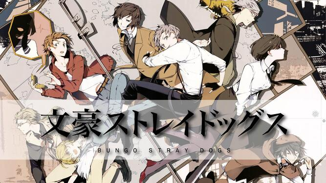
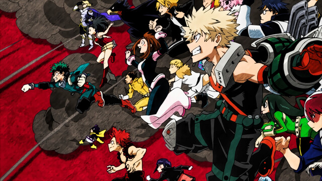
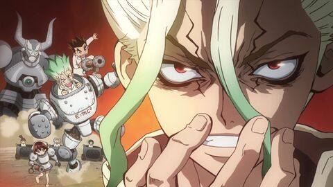
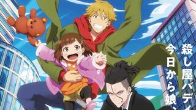
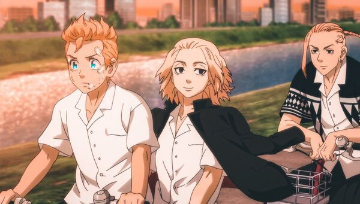

Descripción: El programa se centra principalmente en el hombre tigre Atsushi Nakajima, quien se une a otros dotados de poderes sobrenaturales para realizar diferentes tareas, como administrar un negocio, resolver misterios y llevar a cabo las misiones asignadas por la agencia.
Personajes: Osamu Dazai. Akiko Yosano. Ranpo Edogawa. Fyodor Dostoyevski. Chūya Nakahara. Michizō Tachihara. Ryunosuke Akutagawa. Atsushi Nakajima
Descripción: My Hero Academia es una serie de anime realizada por el estudio BONES basada en el manga homónimo creado por Kohei Horihoshi acerca de un grupo de estudiantes que se preparan para ser superhéroes. La trama del anime My Hero Academia nos sitúa en un mundo en el que la mayoría de la población nace con superpoderes.
Personajes: Izuku Midoriya. Kaina Tsutsumi. Toya Todoroki. All For One. Katsuki Bakugo. Tomura Shigaraki. Toshinori Yagi. Toru Hagakure
Descripción: La historia cuenta las aventuras de Senku y Taiju, dos adolescentes que se ven atrapados en un mundo post-apocalíptico en el que la raza humana se ha convertido en piedra y ellos buscan la manera de revertir la petrificación en la mayor cantidad de personas posibles, para así reconstruir la sociedad tal como la conocian.
Personajes: Yûsuke Kobayashi, Ishigami Senkû, Gen Satô, Chrome, Kengo Kawanishi, Asagiri Gen, Manami Numakura.
Descripción: Un equipo de asesinos que jamás dejan escapar a su presa acaban cuidando de una niña de cuatro años. Así da inicio la vida familiar de un equipo de mortales asesinos a sueldo compuesto por un hombre muy serio y frío y otro muy abierto e impulsivo, y de una pequeña niña inocente. ¿Lograrán compaginar su vida profesional con su vida familiar? ¿Llegará esta peculiar familia temporal a alcanzar la felicidad?
Personajes: Kazuki Kurusu. Rei Suwa. Miri Unasaka. Kyūtarō Kugi. Anna Hanyu. Yuzuko Kurusu. Karin Izumi. Misaki Unasaka. Ryo Ogino
Descripción: Takemichi Hanagaki, un joven de 26 años sin grandes objetivos en su vida, descubre un día que su exnovia de la adolescencia, Hinata Tachibana, así como su hermano menor Naoto, son asesinados por la Tokyo Manji. Cuando Takemichi es empujado hacia las vías de un tren, viaja en el tiempo hasta hace exactamente 12 años, en 2005. Takemichi regresa a sus años de secundaria, y después de revelarle a Naoto que Hinata va a morir, Takemichi es transportado repentinamente al presente, creando una paradoja temporal en la que Naoto sobrevive y ahora es un detective. Naoto deduce que Takemichi puede viajar 12 años al pasado cuando se toman de la mano, y usando sus nuevos conocimientos, Takemichi decide cambiar el futuro para salvar la vida de Hinata y sus amigos.
Personajes: Takemichi Hanagaki. Manjirō Sano. Ken Ryūgūji aka draken. Hinata Tachibana. Naoto Tachibana. Tetta Kisaki. Kazutora Hanemiya. keisuke Baji. Takashi Mitsuya. Haruki Hayashida. Makoto Suzuki. Masataka Kiyomizu. Kazushi Yamagishi. Atsushi Sendō akkun. Shuji Hanma. Hakkia Shiba. Taiju Shiba. Yuzuha shiba. Chifuyu Matsuno. Nahoya Kawata. Ryōhei Hayashi
